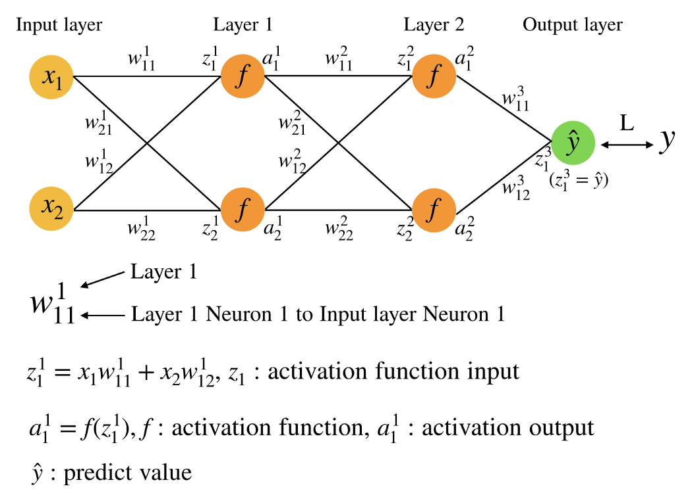
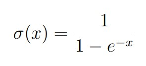
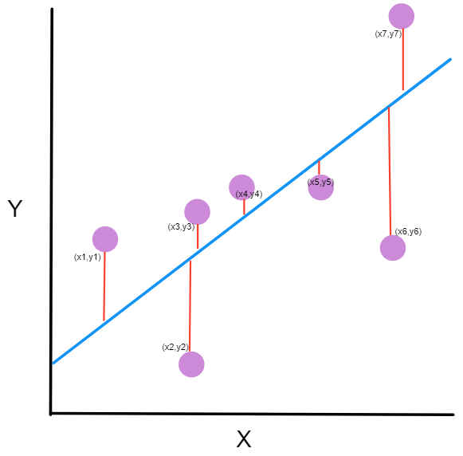
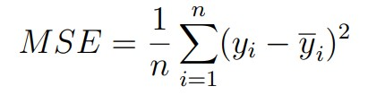

類神經網路學習 <<
Previous Next >> 優化器
neural_network_in_python.pdf
說明前三章的程式碼
2LayerNeuralNetwork.py
origin codes:
# 2 Layer Neural Network in NumPy
import numpy as np
# X = input of our 3 input XOR gate
# set up the inputs of the neural network (right from the table)
X = np.array(([0,0,0],[0,0,1],[0,1,0], [0,1,1],[1,0,0],[1,0,1],[1,1,0],[1,1,1]), dtype=float)
# y = our output of our neural network
y = np.array(([1], [0], [0], [0], [0], [0], [0], [1]), dtype=float)
# what value we want to predict
xPredicted = np.array(([0,0,1]), dtype=float)
X = X/np.amax(X, axis=0) # maximum of X input array
# maximum of xPredicted (our input data for the prediction)
xPredicted = xPredicted/np.amax(xPredicted, axis=0)
# set up our Loss file for graphing
lossFile = open("SumSquaredLossList.csv", "w")
class Neural_Network (object):
def __init__(self):
#parameters
self.inputLayerSize = 3 # X1,X2,X3
self.outputLayerSize = 1 # Y1
self.hiddenLayerSize = 4 # Size of the hidden layer
# build weights of each layer
# set to random values
# look at the interconnection diagram to make sense of this
# 3x4 matrix for input to hidden
self.W1 = np.random.randn(self.inputLayerSize, self.hiddenLayerSize)
# 4x1 matrix for hidden layer to output
self.W2 = np.random.randn(self.hiddenLayerSize, self.outputLayerSize)
def feedForward(self, X):
# feedForward propagation through our network
# dot product of X (input) and first set of 3x4 weights
self.z = np.dot(X, self.W1)
# the activationSigmoid activation function - neural magic
self.z2 = self.activationSigmoid(self.z)
# dot product of hidden layer (z2) and second set of 4x1 weights
self.z3 = np.dot(self.z2, self.W2)
# final activation function - more neural magic
o = self.activationSigmoid(self.z3)
return o
def backwardPropagate(self, X, y, o):
# backward propagate through the network
# calculate the error in output
self.o_error = y - o
# apply derivative of activationSigmoid to error
self.o_delta = self.o_error*self.activationSigmoidPrime(o)
# z2 error: how much our hidden layer weights contributed to output
# error
self.z2_error = self.o_delta.dot(self.W2.T)
# applying derivative of activationSigmoid to z2 error
self.z2_delta = self.z2_error*self.activationSigmoidPrime(self.z2)
# adjusting first set (inputLayer --> hiddenLayer) weights
self.W1 += X.T.dot(self.z2_delta)
# adjusting second set (hiddenLayer --> outputLayer) weights
self.W2 += self.z2.T.dot(self.o_delta)
def trainNetwork(self, X, y):
# feed forward the loop
o = self.feedForward(X)
# and then back propagate the values (feedback)
self.backwardPropagate(X, y, o)
def activationSigmoid(self, s):
# activation function
# simple activationSigmoid curve as in the book
return 1/(1+np.exp(-s))
def activationSigmoidPrime(self, s):
# First derivative of activationSigmoid
# calculus time!
return s * (1 - s)
def saveSumSquaredLossList(self,i,error):
lossFile.write(str(i)+","+str(error.tolist())+'\n')
def saveWeights(self):
# save this in order to reproduce our cool network
np.savetxt("weightsLayer1.txt", self.W1, fmt="%s")
np.savetxt("weightsLayer2.txt", self.W2, fmt="%s")
def predictOutput(self):
print ("Predicted XOR output data based on trained weights: ")
print ("Expected (X1-X3): \n" + str(xPredicted))
print ("Output (Y1): \n" + str(self.feedForward(xPredicted)))
myNeuralNetwork = Neural_Network()
trainingEpochs = 1000
#trainingEpochs = 100000
for i in range(trainingEpochs): # train myNeuralNetwork 1,000 times
print ("Epoch # " + str(i) + "\n")
print ("Network Input : \n" + str(X))
print ("Expected Output of XOR Gate Neural Network: \n" + str(y))
print ("Actual Output from XOR Gate Neural Network: \n" + \
str(myNeuralNetwork.feedForward(X)))
# mean sum squared loss
Loss = np.mean(np.square(y - myNeuralNetwork.feedForward(X)))
myNeuralNetwork.saveSumSquaredLossList(i,Loss)
print ("Sum Squared Loss: \n" + str(Loss))
print ("\n")
myNeuralNetwork.trainNetwork(X, y)
myNeuralNetwork.saveWeights()
myNeuralNetwork.predictOutput()p
定義input(X)和output(Y)
X = np.array(([0,0,0],[0,0,1],[0,1,0], [0,1,1],[1,0,0],[1,0,1],[1,1,0],[1,1,1]), dtype=float)
y = np.array(([1], [0], [0], [0], [0], [0], [0], [1]), dtype=float)
設定神經元及權重
python
def __init__(self):
# X1,X2,X3(自訂義input的神經元數量)
self.inputLayerSize = 3
# Y1(自訂義output的神經元數量)
self.outputLayerSize = 1
# Size of the hidden layer(自訂義hiddenLayer的神經元數量)
self.hiddenLayerSize = 4
# 設定第一層權重為隨機數值，input--->hidden
self.W1 = np.random.randn(self.inputLayerSize, self.hiddenLayerSize)
# 設定第二層權重為隨機數值，hidden--->output
self.W2 = np.random.randn(self.hiddenLayerSize, self.outputLayerSize)
feedForward(前饋)

(圖片來源)
def feedForward(self, X):
# 第一層的動態方程式(activation function)輸入(z)
# z(activation function) = 第一層所有神經元的 input * weights 總和輸入到第二層的其中一個神經元
self.z = np.dot(X, self.W1)
# 第一層的動態方程式(activation function)輸出(a)
# z2(a) = 動態方程式(activation function)用Sigmoid function算法
self.z2 = self.activationSigmoid(self.z)
# 第二層的動態方程式(activation function)輸入(z)
# z3(activation function) = 第二層所有神經元的 input * weights 總和輸入到輸出層的(其中一個)神經元
self.z3 = np.dot(self.z2, self.W2)
# 第二層的動態方程式(activation function)輸出(a)
# o(a) = 動態方程式(activation function)用Sigmoid function算法
o = self.activationSigmoid(self.z3)
# 回傳出前饋結果
return o
backwardPropagate(反向傳播)
def backwardPropagate(self, X, y, o):
# 計算輸出誤差
self.o_error = y - o
# 將Sigmoid function算法用在輸出誤差(錯誤、error)
self.o_delta = self.o_error*self.activationSigmoidPrime(o)
# 隱藏層的輸出誤差*權重
self.z2_error = self.o_delta.dot(self.W2.T)
# 將Sigmoid function算法用在隱藏層輸出誤差(錯誤、error)
self.z2_delta = self.z2_error*self.activationSigmoidPrime(self.z2)
# 糾正第一層權重數值，input--->hidden
self.W1 += X.T.dot(self.z2_delta)
# 糾正第二層權重數值，hidden--->output
self.W2 += self.z2.T.dot(self.o_delta)
trainNetwork(訓練流程)
def trainNetwork(self, X, y):
# 前饋循環
o = self.feedForward(X)
# 反向傳播值
self.backwardPropagate(X, y, o)
activationSigmoid
def activationSigmoid(self, s):
# activation function
# 使用Sigmoid function算法(S-curve)
return 1/(1+np.exp(-s))

activationSigmoidPrime
def activationSigmoidPrime(self, s):
# First derivative of activationSigmoid
# calculus time!
return s * (1 - s)
saveSumSquaredLossList(儲存損失函數值)
def saveSumSquaredLossList(self,i,error):
lossFile.write(str(i)+","+str(error.tolist())+'\n')
saveWeights(儲存權重值)
def saveWeights(self):
np.savetxt("weightsLayer1.txt", self.W1, fmt="%s")
np.savetxt("weightsLayer2.txt", self.W2, fmt="%s")
predictOutput(結果輸出)
def predictOutput(self):
print ("Predicted XOR output data based on trained weights: ")
print ("Expected (X1-X3): \n" + str(xPredicted))
print ("Output (Y1): \n" + str(self.feedForward(xPredicted)))
Epochs(疊代次數，feedForward+backprogation運算完算一次疊代)
# 訓練疊代次數
trainingEpochs = 1000
TensorFlowKeras.py
origin codes:
import tensorflow as tf
from tensorflow.keras import layers
from tensorflow.keras.layers import Activation, Dense
import numpy as np
# X = input of our 3 input XOR gate
# set up the inputs of the neural network (right from the table)
X = np.array(([0,0,0], [0,0,1], [0,1,0], [0,1,1], [1,0,0], [1,0,1], [1,1,0], [1,1,1]), dtype=float)
# y = our output of our neural network
y = np.array(([1], [0], [0], [0], [0], [0], [0], [1]), dtype=float)
model = tf.keras.Sequential()
model.add(Dense(4, input_dim=3, activation='relu', use_bias=True))
#model.add(Dense(4, activation='relu', use_bias=True))
model.add(Dense(1, activation='sigmoid', use_bias=True))
model.compile(loss='mean_squared_error', optimizer='adam', metrics=['binary_accuracy'])
print (model.get_weights())
history = model.fit(X, y, epochs=2000, validation_data = (X, y))
model.summary()
# printing out to file
loss_history = history.history["loss"]
numpy_loss_history = np.array(loss_history)
np.savetxt("loss_history.txt", numpy_loss_history, delimiter="\n")
binary_accuracy_history = history.history["binary_accuracy"]
numpy_binary_accuracy = np.array(binary_accuracy_history)
np.savetxt("binary_accuracy.txt", numpy_binary_accuracy, delimiter="\n")
print(np.mean(history.history["binary_accuracy"]))
result = model.predict(X ).round()
print (result)
定義input(X)和output(Y)
X = np.array(([0,0,0],[0,0,1],[0,1,0], [0,1,1],[1,0,0],[1,0,1],[1,1,0],[1,1,1]), dtype=float)
# X是三輸入XOR邏輯閘
y = np.array(([1], [0], [0], [0], [0], [0], [0], [1]), dtype=float)
# Y是輸出神經網路
setting
model = tf.keras.Sequential() #sequential定義modle為層狀結構
model.add(Dense(4, input_dim=3, activation='relu', use_bias=True))
'''
add是從最上層開始加入，Dense是密集連線的神經網路，
4:輸出空間(神經元，輸出到4個神經元)，input_dim:輸入神經元個數，activation:定義啟動函數使用的類型，use_bias:使用偏差，True開啟。從inputlayer輸出到hiddenlayer的設定
'''
#model.add(Dense(4, activation='relu', use_bias=True))
model.add(Dense(1, activation='sigmoid', use_bias=True))
# 從hiddenlayer輸出到outputlayer的設定
model.compile(loss='mean_squared_error', optimizer='adam', metrics=['binary_accuracy'])
'''
配置訓練模組，loss funsion:用maen squared error(差平方誤差)，optimizer:優化器，
用adam function，metrics：計算準確率，用binary_accuracy
'''
print (model.get_weights())#印出回傳的正確權重
history = model.fit(X, y, epochs=2000, validation_data = (X, y))
'''
訓練模型給予固定epochs，迭代收集到的資料，validation_data：評估準確率(不包含在訓練裡面)
'''
ReLU
max_value：輸出後最大值上限
negative_slope：負斜率係數
threshold：可通過的數值界線
[tf.keras.layers.ReLU | TensorFlow Core v2.4.0]
mean squared error(MSE)

(圖片來源)

[Proof (part 1) minimizing squared error to regression line (video) | Khan Academy]
[15 Types of Regression in Data Science]
[tf.keras.Sequential | TensorFlow Core v2.4.0]
[Machine learning: an introduction to mean squared error and regression lines]
[tf.keras.layers.Dense | TensorFlow Core v2.4.0]
[Module: tf.keras.losses | TensorFlow Core v2.4.0]
[Module: tf.keras.optimizers | TensorFlow Core v2.4.0]
[Module: tf.keras.metrics | TensorFlow Core v2.4.0]
[hub.KerasLayer | TensorFlow Hub]
[Module: tf.summary | TensorFlow Core v2.4.0]
[Keras documentation: Layer activation functions]
history
model.summary()
# 摘要資料使用在分析和可視化，為了確認訓練架構在符合預期方向
loss_history = history.history["loss"]
#回傳紀錄事件(loss)到history物件，取得fit方法的模組回傳值
numpy_loss_history = np.array(loss_history)
#將loss_history數值存成array
np.savetxt("loss_history.txt", numpy_loss_history, delimiter="\n")
#將numpy_loss_history存成loss_history.txt，並將每筆資料用換行符號隔開
binary_accuracy_history = history.history["binary_accuracy"]
#回傳紀錄事件(binary_accuracy)到history物件
numpy_binary_accuracy = np.array(binary_accuracy_history)
#將binary_accuracy_history數值存成array
np.savetxt("binary_accuracy.txt", numpy_binary_accuracy, delimiter="\n")
#將numpy_binary_accuracy存成binary_accuracy.txt，並將每筆資料用換行符號隔開
result
print(np.mean(history.history["binary_accuracy"]))
#印出平均binary_accuracy記錄到的數值
result = model.predict(X ).round()
#替輸入樣本產生輸出預測
print (result)
#印出結果
整理好的PDF檔
類神經網路學習 <<
Previous Next >> 優化器